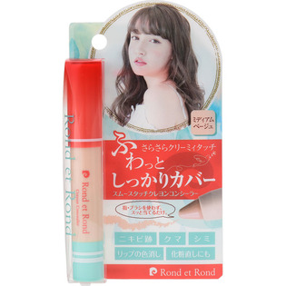

返回列表
产品名称：ロン・エ・ロン スムースタッチクレヨンコンシーラー ミディアムベージュ

＿ ロン・エ・ロン スムースタッチクレヨンコンシーラー ミディアムベージュ １本
メーカー ＿
JANコード 4589975540712
商品の特徴
直塗ＯＫ
クレヨン質感でぼかす手間なしコンシーラー
- 成分・分量
- マカデミアナッツ油ポリグリセリル－６エステルズベヘネート、ジメチコン、トリ（カプリル酸/カプリン酸）グリセリル、ジ（カプリル酸/カプリン酸）プロパンジオール、ポリエチレン、カルナウバロウ、ミツロウ、キャンデリラロウ、（ジフェニルジメチコン/ビニルジフェニルジメチコン/シルセスキオキサン）クロスポリマー、テトライソステアリン酸スクロース、セスキイソステアリン酸ソルビタン、ラウロイルグルタミン酸ジ（フィトステリル/オクチルドデシル）、リン酸アスコルビルＭｇ、ビオチン、アーチチョーク葉エキス、アカツメクサ花エキス、ヒアルロン酸Ｎａ、ゲンチアナ根茎/根エキス、カミツレ花エキス、マグワ根皮エキス、水、スクワラン、グリセリン、ＢＧ、レシチン、トコフェロール、シメチコン、クエン酸Ｎａ、クエン酸、エタノール、フェノキシエタノール、（＋/－）酸化チタン、酸化鉄、シリカ、マイカ、水酸化Ａｌ
- 用法及び用量
- カバーしたい箇所に優しくすべらせながらトントンと垂直にのせます。
目のクマには、滑らせるように１往復してのせてください。